Chemosensation · olfactory channels · maleCNS v1.0 × FlyWire 783
Five olfactory channels carry fly odours. In the male brain they hold more receptor neurons than any other olfactory channel, and they reach sexually dimorphic targets at the first synapse. What they do with their output, they do in both sexes alike.
Findings
| Panel | Result |
|---|---|
| A | The five fly-odour glomeruli are the five largest ORN populations of the male brain, ranks 1 to 5 of 53. Against a line fitted to the other 48 types they are also the five most male-enriched. DA1 falls 9.3 residual sd below that line. |
| A3 | They hold a larger share of the male ORN output than of the female. DA1 takes 8.3 % of the male ORN output against 3.8 % of the female. DL3 is the exception: on output share it is an ordinary channel in both sexes. |
| B | One synapse downstream, four of the five carry the largest dimorphic fractions of all 53 types. VA1v sends 9.0 % of its output to dimorphic partners and VA1d 6.6 %, against a best null of 0.6 %. DL3 sends none. |
| C1 | A fly-odour ORN contacts no more partner types than an ordinary ORN, and no more in one sex than in the other. The two sexes differ by under one partner type once the count is corrected for how completely each cell is traced. |
| C2 | The two sexes spread the output across partners in the same shape. By the area between the male and the female curve, the five sit at or below the median of all 53. |
Method
The male is maleCNS v1.0 and the female is FlyWire 783. The olfactory receptor neurons are the cells that each dataset classes as olfactory. The same 53 ORN types occur on both sides and no type is present on one side only. Neither side carries a synapse threshold.
| Side | Dataset | ORN cells | Types | Out-edges | Out-syn / cell |
|---|---|---|---|---|---|
| Male | maleCNS v1.0 | 2 635 | 53 | 234 487 | 517 |
| Female | FlyWire 783 | 2 276 | 53 | 98 022 | 157 |
DA1, VA1v, VA1d, DL3 and VL2a. DA1 and DL3 carry cVA, VA1v and VA1d methyl laurate, VL2a phenylacetic acid.
The 48 ORN types that are not fly-odour types. Not a shuffle and not a random draw. Every fit on this page is fitted on those 48, and every ranking is a ranking against them.
A male ORN carries 517 output synapses and a female ORN 157. That is a property of the two reconstructions, not of the fly. Panels that count synapses use shares, and panels that count partners are rarefied.
Panel A
A1 · cells per fly-odour glomerulus
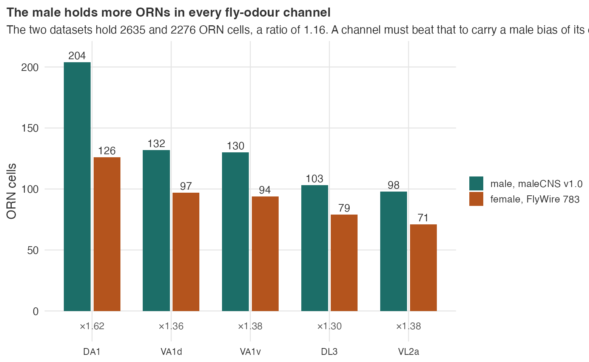
A1′ · the same census for all 53 ORN types
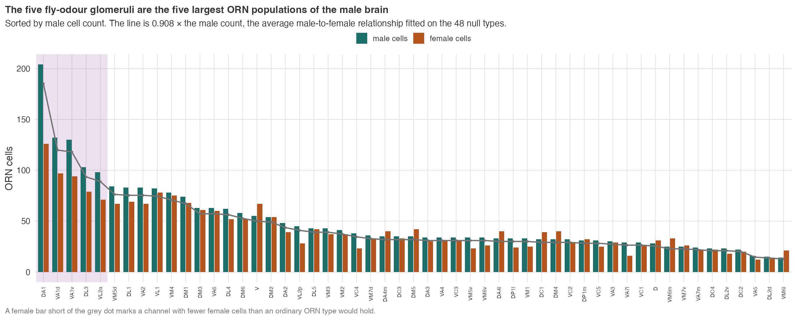
A2 · all 53 types against the average line
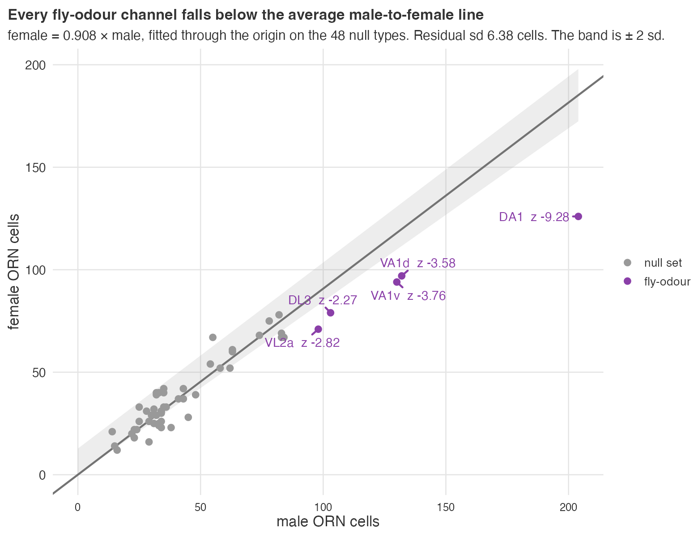
A2′ · distance from the line, ranked
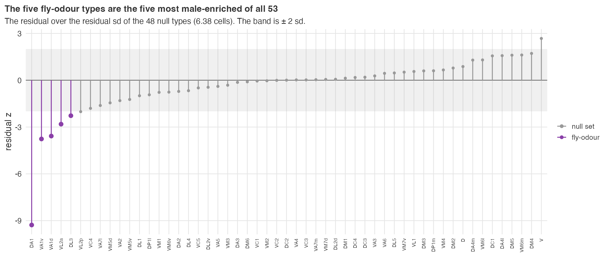
A3 · share of all ORN output synapses
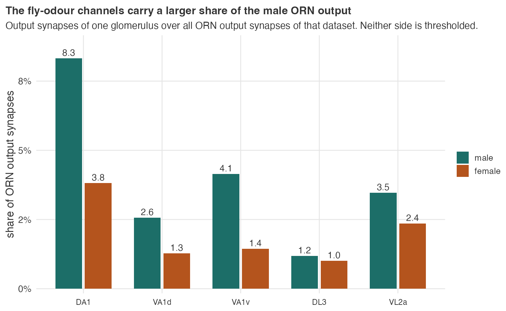
A3′ · the same share for all 53 types
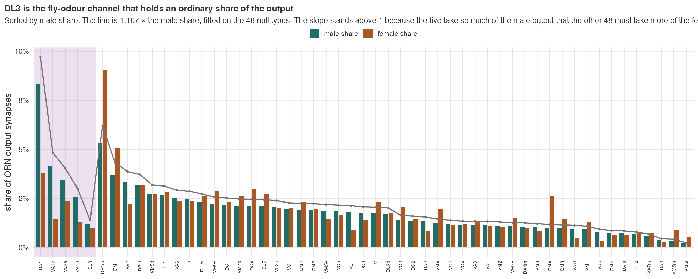
Panel B
For each ORN type, take its direct postsynaptic partners and ask what share of the output reaches a type the male connectome marks dimorphic or male-specific. One hop.
B · output synapses onto dimorphic partners
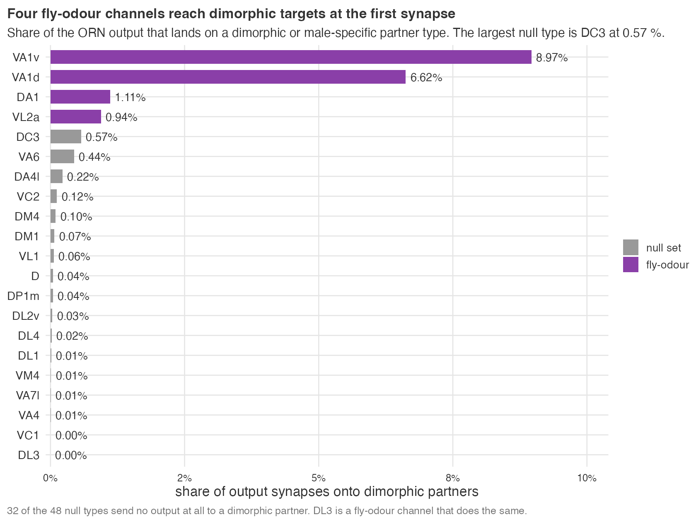
B′ · the two scores
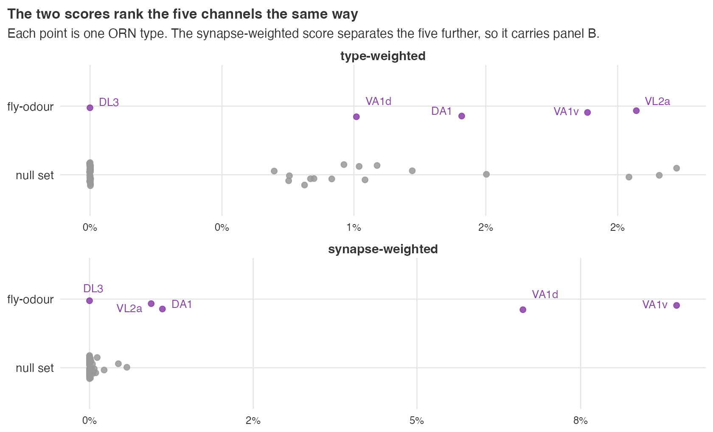
Panel C
The number of partner types a cell reaches is a species-richness count, and richness rises with sample size. A male ORN carries 3.3 times the output synapses of a female ORN, so it reaches more partner types for arithmetic reasons alone. Rarefaction removes that: for each cell, the expected number of distinct partner types in a random sample of a fixed number of its output synapses. The form is exact and needs no simulation, E = ∑ (1 − C(S−w, N) / C(S, N)) over the partner types of that cell.
C1 · distinct partner types for one ORN, raw
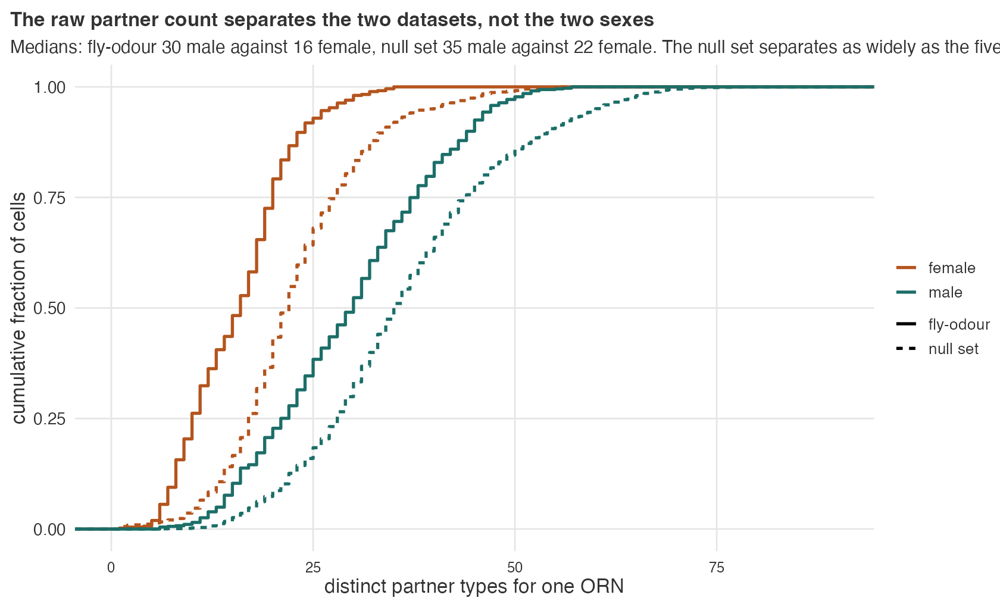
C1′ · the same count, rarefied to 50 output synapses
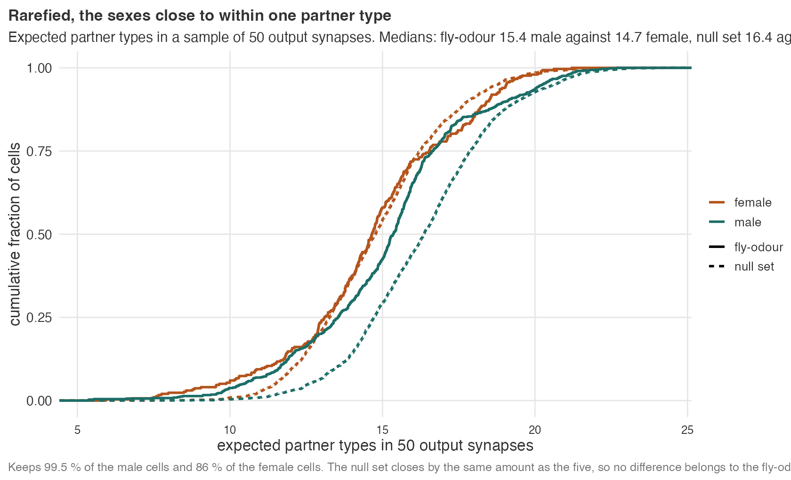
C2 · rank abundance, one plot per glomerulus
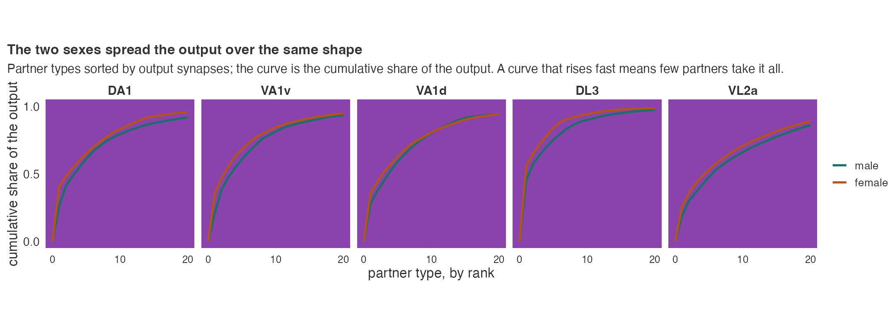
C2′ · every type, ordered by the male-female gap
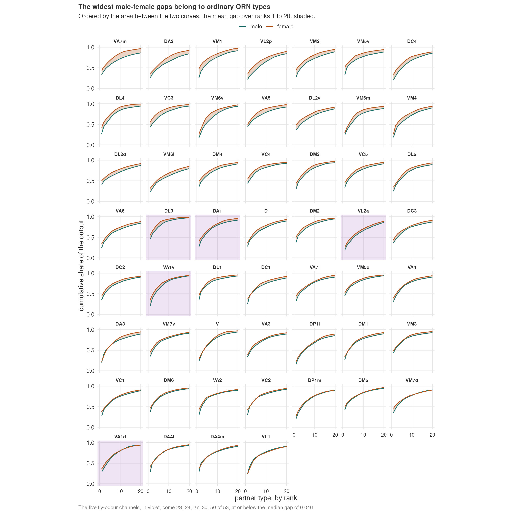